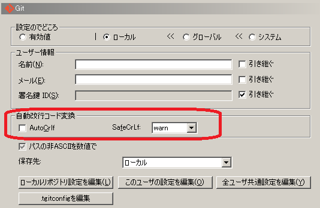

環境構築
Git導入
- Git for Windows
- https://git-for-windows.github.io/
- 「git --version」で導入確認
- Tortoise
- https://tortoisegit.org/
- ダウンロードページ内の Language Packs からUI日本語化パッチを入手すると良い
- Gitコミット設定
- 赤枠部分の改行コード設定に注意
- 
Node.js導入
- Node.js
- http://nodejs.jp/nodejs.org_ja/
- 「node -v」で導入確認
IDE導入
- Eclipse
- http://mergedoc.osdn.jp/
- e-freakとしてはEclipse導入推奨というだけなので、自分に合ったのを利用すればOK
- 慣れていればテキストエディタだけでも。